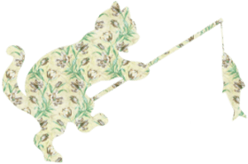

<link rel="stylesheet" href="./css/style.css">

<header class="header">
	<h1>3D图书展示</h1>
</header>

<section class="main">
	<div class="book viewdefault">
		<div class="front">
			<div class="cover">
				<h2>
					<span>J.C. Salinger</span>
					<span>The Catcher in the Rye</span>
				</h2>
			</div>
			<div class="cover-back"></div>
		</div>
		<div class="page">
			<div class="bk-content active">
				<p>Oceanic flyingfish spotted danio fingerfish leaffish, Billfish halibut Atlantic cod threadsail poacher slender mola. Swallower muskellunge, turbot needlefish yellow perch trout dhufish dwarf gourami false moray southern smelt cod dwarf gourami. Betta blue catfish bottlenose electric ray sablefish.</p>
			</div>
			<div class="bk-content">
				<p>Oceanic flyingfish spotted danio fingerfish leaffish, Billfish halibut Atlantic cod threadsail poacher slender mola. Swallower muskellunge, turbot needlefish yellow perch trout dhufish dwarf gourami false moray southern smelt cod dwarf gourami. Betta blue catfish bottlenose electric ray sablefish.</p>
			</div>
			<div class="bk-content">
				<p>Oceanic flyingfish spotted danio fingerfish leaffish, Billfish halibut Atlantic cod threadsail poacher slender mola. Swallower muskellunge, turbot needlefish yellow perch trout dhufish dwarf gourami false moray southern smelt cod dwarf gourami. Betta blue catfish bottlenose electric ray sablefish.</p>
			</div>
		</div>
		<div class="back">
			
			<p>Holden Catfield is a seventeen-year-old dropout who has just been kicked out of his fourth school. Navigating his way through the challenges of growing up, Holden dissects the 'phony' aspects of society.</p>
		</div>
		<div class="right"></div>
		<div class="left">
			<h2>
				<span>J.C. Salinger</span>
				<span>The Catcher in the Rye</span>
			</h2>
		</div>
		<div class="top"></div>
		<div class="bottom"></div>
	</div>
	<div class="option">
		<button id="btn-back">FLIP</button>
		<button id="btn-view">VIEW</button>
	</div>
</section>

<script src="{{ site.BASE_PATH }}/js/jquery-2.1.1.min.js"></script>
<script>
	(function($){
		var btnBack = $('#btn-back'),
			btnView = $('#btn-view'),
			book    = $('.book');
		btnBack.bind('click',function(){
			if (book.hasClass('viewdefault')) {
				book.removeClass('viewdefault');
				book.addClass('viewback');
			}else if (book.hasClass('viewinside')){
				book.removeClass('viewinside');
				setTimeout(function(){
					book.addClass('viewback');
					clearTimeout();
				},500);
			}else if (book.hasClass('viewback')){
				book.removeClass('viewback');
				book.addClass('viewdefault');
			}
		});
		btnView.bind('click',function(){
			if (book.hasClass('viewdefault')) {
				book.removeClass('viewdefault');
				book.addClass('viewinside');
			}else if (book.hasClass('viewback')){
				book.removeClass('viewback');
				setTimeout(function(){
					book.addClass('viewinside');
					clearTimeout();
				},500);
			}else if (book.hasClass('viewinside')){
				book.removeClass('viewinside');
				book.addClass('viewdefault');
			}
		});
	})(jQuery);
</script>